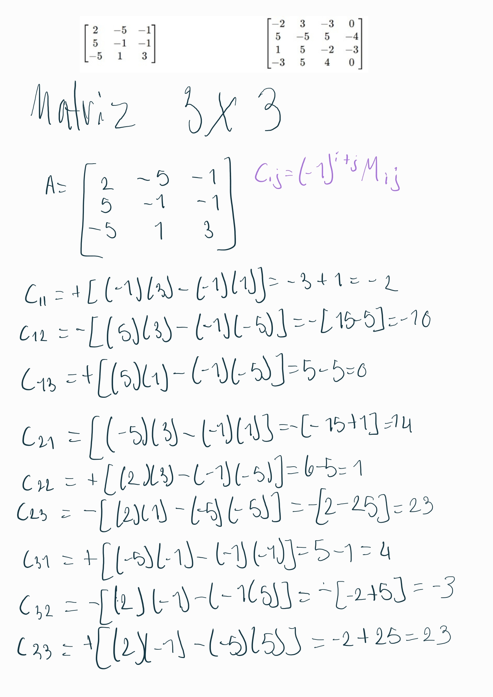
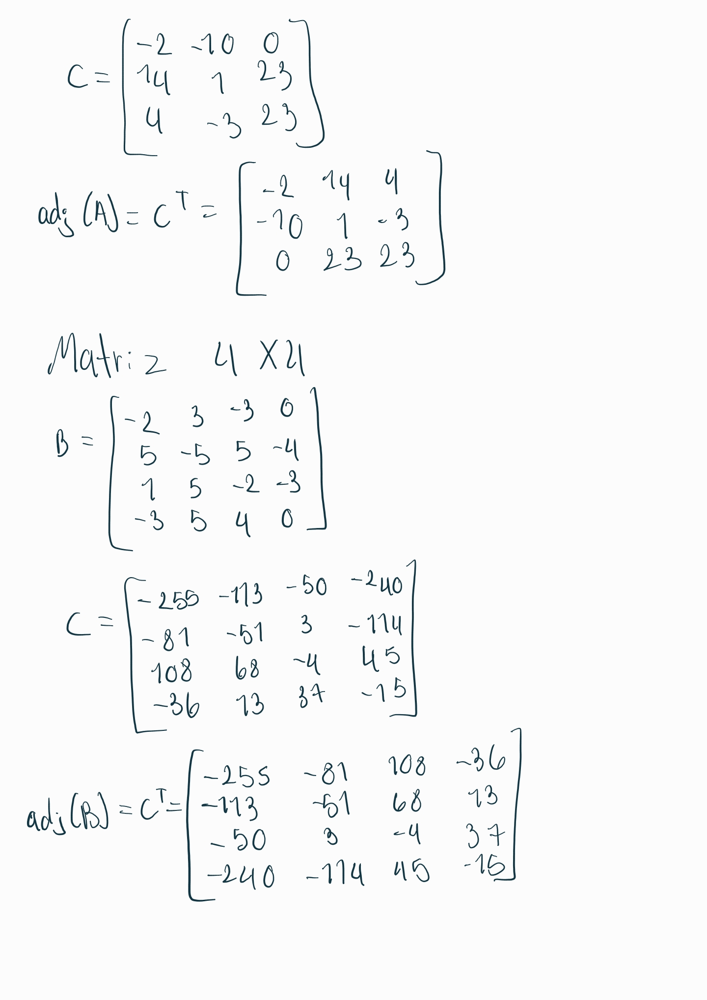

Estudiante: Jairo David Méndez Méndez
Carné: 9613 23 20071
Carrera: Licenciatura en Educación Física y Matemática, Universidad Mariano Gálvez
Curso: Álgebra Lineal y Lógica Matemática
El cálculo de la adjunta de una matriz \( A \) requiere la determinación previa de sus cofactores. Haz clic en el botón inferior para descubrir paso a paso cómo se calcula.
Se debe partir de una matriz cuadrada \( A \) de dimensiones \( n \times n \).
Para cada elemento \( a_{ij} \), se elimina la fila \( i \) y la columna \( j \) a la que pertenece. El determinante de la submatriz resultante se conoce como menor \( M_{ij} \).
El cofactor \( A_{ij} \) se obtiene aplicando un signo alternante al menor calculado en el paso anterior. La fórmula es:
Se construye una nueva matriz \( C \) (la matriz de cofactores) colocando cada cofactor \( A_{ij} \) en la posición correspondiente del elemento original.
La adjunta de A (escrita como adj A) es simplemente la matriz transpuesta de la matriz de cofactores \( C \). Es decir, se intercambian las filas por las columnas:
Dada la matriz \( A \) asignada:
Aplicando el algoritmo descrito, se obtienen primero los cofactores:
Matriz de cofactores (\( C \)):
Respuesta Final (Adjunta de A): (Transpuesta de \( C \))
Desarrollo matemático del cálculo de cofactores y matriz adjunta resuelto de forma manual.

Desarrollo de cofactores y matriz transpuesta para el ejercicio de 3x3.

Cálculo de los 16 menores y cofactores para el ejercicio de 4x4.